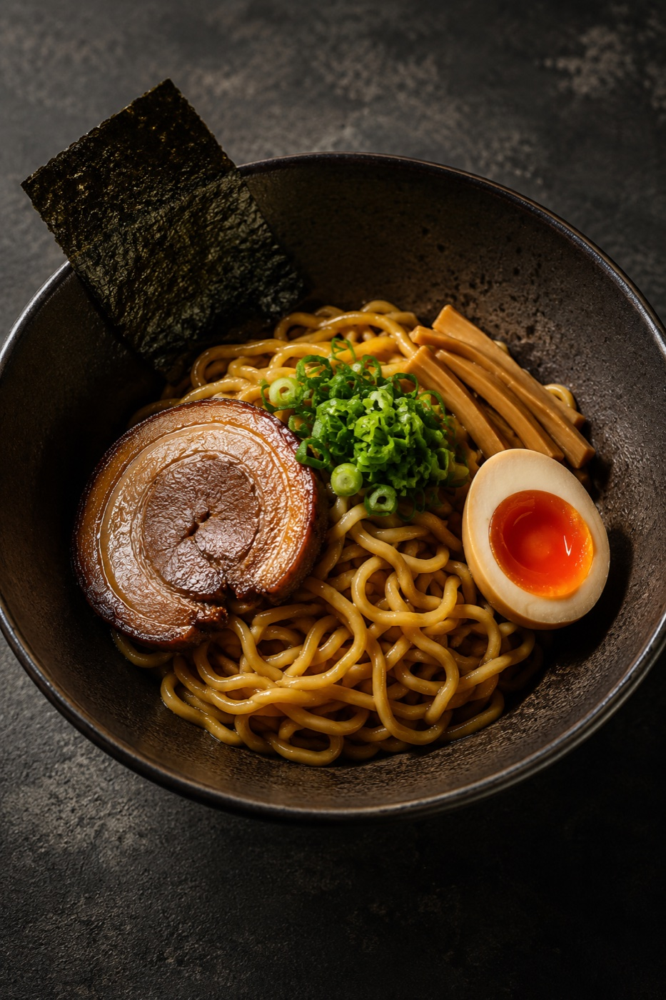
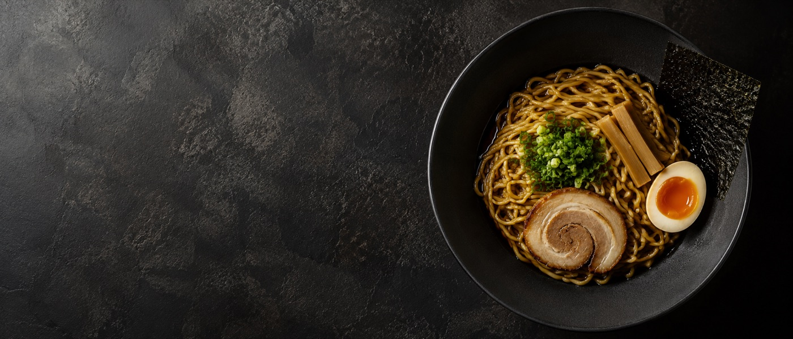
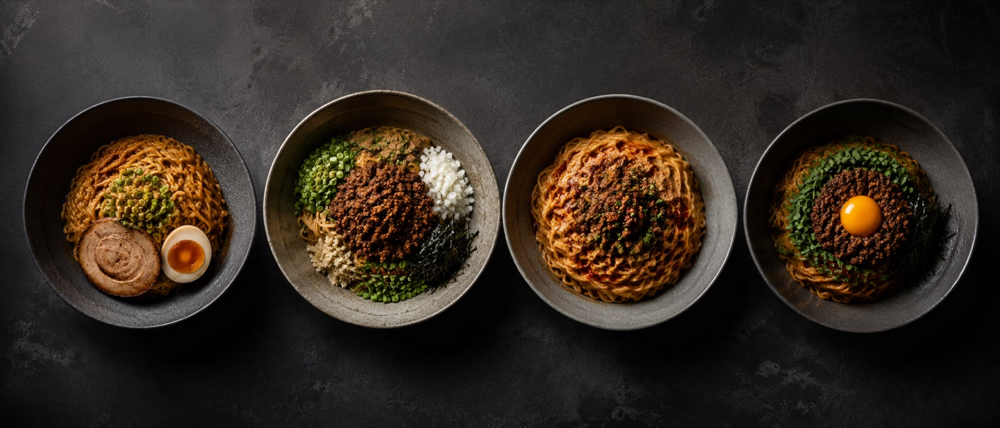
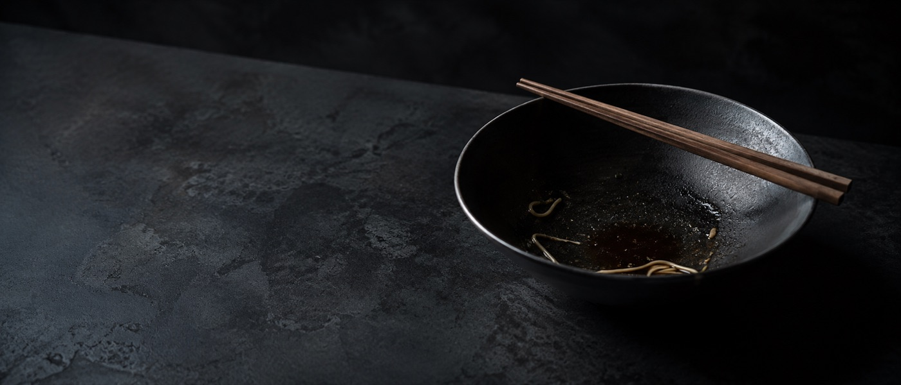

Soba oleosa sine iure
スープを炊かない、という一手から分かれていく一群

図版：No.001「油そば」章扉（一坪ビジネス図鑑 No.001 装丁を踏襲）
あなたが今、ラーメンで開業を考えているなら——あるいは、すでに店を持ちながら「この業態で本当に正しかったのか」を確かめたいなら——この図鑑は、その問いの材料になるかもしれません。
見るのは原価と損益と撤退の条件です。スープを炊かないと、原価はどこまで下がるのか。その余力を、どこへ振ったかで店の性格が決まる。一杯がいくらで成り立ち、どこで壊れるのか。煽らず、淡々と、数字で記録します。
食べ歩きレポートではありません。経営判断の手前にある、構造の地図です。
同じ「スープなし麺」なのに、八百八十円で回す店と、千三百円で売る店がある。違いは何か。
先に答えを置く。違いは「スープを炊かないこと」そのものにはない。炊かずに浮いた余力を、どこに振ったかにある。片方はその余力を回転と価格据置へ流し、もう片方は同じ余力をタレへ注ぎ込んだ。スープを消した一手が、片方を「規模の店」に、もう片方を「味の店」に分けた。
この記事は、油そば一杯を検死台に乗せるところから始める。一杯の原価と損益を解剖し、そのうえで視野を一段引く。油そばは単独の業態ではなく、「スープを炊かない」という一つの選択から枝分かれした、一群の入口にすぎないからだ。
昼の十一時半。大学の正門から徒歩三分、雑居ビルの一階。十四坪の店に、客が入りはじめる。券売機の前で迷う時間は短い。並、大、ダブル。サイズが違っても値段は同じだから、迷うのは麺の量だけだ。
厨房を見る。寸胴がない。ラーメン屋にあるはずの、骨を何時間も炊く大きな鍋が、ここにはない。あるのは麺を茹でる湯と、タレの容器と、調合された油の瓶。注文が通ると、麺を茹で、湯を切り、タレと油で和えて、具をのせる。提供までの動きに、よどみがない。
ラーメンが「スープに何時間かけたか」を競う料理だとすれば、油そばはその土俵に上がらない。スープという工程ごと、捨てている。捨てたぶんだけ、厨房は軽い。一時間ほどの仕込みで店が開き、未経験の手でも味がぶれない。「給油しに行く」という言葉が客のあいだで流通するほど、その軽さは支持されてきた press。

一杯を分解する。スープがないという事実は、原価表の上で三つの引き算になって現れる。
第一に、食材費。骨も背脂もないから、その仕入れがゼロになる interpretation。第二に、光熱費。寸胴を長時間炊き続けるガスと電気が要らない。第三に、労務費。仕込みの中心だった「炊き場」の人手と時間が消える。スープを持たないとは、原価の三つの源泉を同時に断つということだ。
残るのは何か。一杯あたりの内訳を、店主証言ベースで置くと、麺がおよそ五十円、タレと調合油で十円、ネギ・チャーシュー・ナルトなどの具で四十円ほど press（2013年の個人店店主証言）。合計で、一杯の総原価は百円から百六十円に収まる press。タレと油は業態の「肝」でありながら、原価そのものはいちばん安い。味の核と、原価の重さが、ここでは一致しない。
ここから食材原価率を出すと、十六・七パーセントから十八パーセント press（個人店店主証言）。飲食店の原価率としては、かなり低い部類に入る。ただし、この数字は出典によって大きく割れる。検死台では、割れた数字を片方に寄せない。両方を並べる。
| 出典 | 食材原価率 | tier | 注 |
|---|---|---|---|
| 個人店店主証言 (2013) | 16.7〜18% | press | 自家調達・トッピング最小の理論下限 |
| 歌志軒 (foods-route 公式募集) | 26.5%（容器別4.8%） | official | FC募集ページの実績例 |
| 歌志軒 (kajiken.biz 公式) | 30% | official | 同社内で 26.5% と 30% が併存 |
| ぶらぶら (公式募集モデル A/B/C) | 34.0〜34.1% | official | 容器・廃棄込みの実運用値に近いと推測 estimate |
「十六・七パーセント」と「三十〜三十四パーセント」は、矛盾ではなく別のレイヤーの数字だと読むのが正確だ interpretation。前者は食材だけを見た理論下限。後者は、容器代・廃棄・実際のオペレーションを含んだチェーンの公称値。だから図鑑では、理論下限十六・七パーセント、実運用三十〜三十四パーセント、と二段で記録する。
そして、スープがないことは「原価がゼロに近い」を意味しない。麺・タレ・油・チャーシュー・海苔は、二〇二二年から二四年にかけて全方位で約十三・五パーセント値上がりしている gov-stat。スープを捨てた一杯も、物価高の手は届く。
原価が軽いなら、儲かるはずだ。図鑑が立ち止まるのは、ここからだ。
代表的な標本価格を置く。東京油組総本店は、並 (160g)・大 (240g)・ダブル (320g) のどのサイズでも、一律で八百八十円 official（日経クロストレンド 2025年4月）。量が二倍でも値段は変わらない。この「八百八十円」という数字は、ただのメニュー価格ではなく、業態の天井を示している。
千円の壁、という言葉が外食にはある。一杯が千円を超えると客の手が止まる、という経験則だ。油そばはその壁の、すぐ下に張りついている。物価が上がっても価格を上げないこと自体が、集客の装置になっている press。安さがブランドである以上、値上げは集客力を直接削る。価格転嫁の自由度が、構造的に低い。
損益の骨格を、黒字の目安となる FL 比率で見る。家賃と人件費と食材費を足したものが売上に占める割合のことだ。一般に、食材費 (F) 三十パーセント、人件費 (L) 二十パーセントで合計六十パーセント以下なら黒字、とされる official。油そばは食材費が十六・七〜三十四パーセント、人件費はスープがないぶん構造的に低い official interpretation。FL に余裕がある。これが、ラーメン業界が苦戦するなかで油そば業態が成長してきた、数字の上の理由だ interpretation。
利益率も、公式募集ページの実績例を並べると、おおむね二十パーセント前後に収束する。
| チェーン | 月商 | 営業利益 | 利益率 | 規模 | tier |
|---|---|---|---|---|---|
| 歌志軒 (foods-route) | 70万円 | 15万円 | 21% | コンロのみ | official |
| ぶらぶら モデルA | 320万円 | 62万円 | 19.4% | 14坪/18席 | official |
| ぶらぶら モデルB | 400万円 | 79万円 | 19.8% | 14坪/18席 | official |
| ぶらぶら モデルC | 600万円 | 129万円 | 21.5% | 14坪/18席 | official |
数字はきれいに並ぶ。だが、並びすぎる数字には注意がいる。同じ歌志軒で「月商七十万」(foods-route) と「十坪で月商五百万円超が続出」(kajiken 公式) という、約七倍も離れた二つの数字が併存している official。前者はテイクアウト含みの控えめなモデル、後者は好立地の上澄み事例だと推測する estimate。募集ページの「続出」は、うまくいった店だけが見える生存バイアスの典型だ。図鑑では、割り引いて読む。
損益分岐の杯数も、一次資料がないので試算として置く estimate。ここで一点、混ぜてはいけないものがある。「八百八十円均一」はチェーンの値付けであって、個人店の客単価ではない。検死台では、この二つを別の損益モデルとして分けて並べる。
試算の土台は、official 実績（ぶらぶら 月商三百二十万・営業利益六十二万・利益率十九・四パーセント official）に整合する形で逆算した。この実績値は公式募集モデルゆえ生存バイアスを含みうるが、計算ロジックの検証基準として用いる interpretation。月商三百二十万を、食材費三十パーセント・人件費二十パーセント official で割り戻すと、家賃を含む固定費は月およそ九十八万円に落ち着く estimate（家賃六十五万＋その他三十三万に分解、estimate）。客単価は、八百八十円均一店のトッピング込み平均を下振れさせた七百八十円を主標本に置く press official。なぜ粗利率に実運用上限寄りの値を採るかというと、容器・廃棄・実オペを含んだチェーン公称が三十〜三十四パーセントであり、開業判断は保守的に実運用上限側の原価率で見ておくほうが安全だからだ interpretation。
| 原価率シナリオ | 限界利益率 | 損益分岐月商 | 分岐杯数/日 | 必要回転/日 | 必要稼働率 |
|---|---|---|---|---|---|
| 理論下限 F 16.7% press | 63.3% | 154.8万円 | 76杯 | 4.24回転 | 48.2% |
| 実運用 F 30% official | 50.0% | 196.0万円 | 97杯 | 5.37回転 | 61.0% |
※ 方式1（人件費を売上連動で控除する保守的モデル）。満席フル回転は18席×8.8回転＝158杯/日＝上限月商321万円が天井 estimate。計算は再現スクリプト ramen-kpi-sim.py で official アンカーと突合し全5検算 PASS。
読み方はこうだ。実運用ベース（F三十パーセント）でも、損益分岐は一日九十七杯・五・四回転・稼働率六十一パーセント。仕込み一時間・少人数・高回転という構造的優位のおかげで、満席の六割でも黒字ラインに届く余白がある。逆に言えば、回転が四回転を割ると（昼しか入らない等のピーク偏在）即座に赤字圏へ落ちる。
そして、八百八十円均一のチェーン型は同じ表では測れない。均一価格は増量無料を満足度へ転嫁する設計で、客単価が固定される代わりに回転を取りにいく型だ。個人店の六百〜七百八十円帯とは、損益の効き方そのものが違う。同一の試算に混ぜず、自店がどちらの値付けかを先に決めてから表を選ぶこと。
損益分岐の手前に、二つの定量条件がある。第一に初期投資。油そば専門店の開業費用は報道ベースで一千万〜二千万円 press、ぶらぶら公式モデルの合計で千三百十三万円 official。これを回収月数で見ると、好立地×高回転（営業利益月四十二・六万）を基準に、ぶらぶら型一千三百十三万で三十・八ヶ月（約二・六年）、小型居抜き八百万なら十八・八ヶ月（約一・六年）estimate、スケルトン新規二千万で四十六・九ヶ月（約三・九年）press。回転が低調な象限（営業利益月二十二・四万）に落ちれば、同じ一千三百十三万でも五十八・七ヶ月（約四・九年）へ非線形に悪化する。
第二に立地の定量条件。回転業態は商圏の昼間人口と賃料の対売上比で決まる。家賃は損益分岐に比例して効く ── 家賃が上がるほど必要杯数がそのまま増える。目安として、上の試算の固定費九十八万は月商三百二十万に対し約三十一パーセント、うち家賃六十五万は賃料対売上比およそ二十パーセントに当たる estimate。賃料対売上比が二十パーセントを大きく超える立地は、回転で取り返せる商圏人口があるかを契約前に検証する必要がある。
立地（家賃）と回転で四象限を切ると、この業態の核心が数字で出る estimate。最も儲かるのは「立地bad×回転high」（営業利益率二十五・七パーセント）で、高家賃の好立地（「立地good×回転high」十三・三パーセント）を上回る。味で堀を築けない業態は、好立地の家賃プレミアムを払うほど利益が削られる。逆に最も危険なのは「立地good×回転low」（マイナス八・八パーセントの赤字） ── 高い家賃を払ったのに回転が伴わない、廃業パターンの数値版だ。回転の利益感応度は家賃のそれより大きい。だから「立地命」と言われても、本質は家賃の絶対額ではなく、その家賃で回転を取れるかにある。
すでに店を持つ側には、改善施策の効き順が出ている estimate。薄利の既存店（十八席・七回転・七百八十円・F三十パーセント）を起点に単独施策を打つと、効くのは客単価＋百円（年＋百九十七万）＞回転＋〇・五（年＋百十万）＞原価率−三ポイント（年＋九十二万）の順。スープレス業態はもともと原価率が低いため、原価をさらに削る伸びしろは小さく、単価と回転で取りにいくほうが効く。ただし客単価アップは最も効く一方、客離れリスクを抱えるため最も慎重に扱う施策でもある。
限界利益率63.3% / 月154.8万 / 日76杯（4.2回転・稼働48%）限界利益率50.0% / 月196.0万 / 日97杯（5.4回転・稼働61%） officialestimate
ramen-kpi-sim.py の出力（official アンカー突合 全5検算 PASS）。estimate のプレースホルダ（固定費・客単価・回転）は自店実額で上書きする前提。ここまでで、油そばが「原価が軽く、損益に余裕のある業態」だと見えてくる。では、その強さはどこから来て、なぜ続かないのか。鍵は、レシピが堀にならない、という一点にある。
ラーメンのスープは、何時間も炊く暗黙知のかたまりだ。透明度、炊き時間、配合。簡単には真似できないから、それ自体が参入障壁、つまり堀になる。油そばには、その堀がない。タレと調合油の配合が肝だが、配合は比較的たやすく模倣・リバースされる。そして業態の本質は「単純なオペレーションで、誰でも均質に作れる」ことにある interpretation。
ここに、この業態の二面性がある。「誰でも作れる」ことは、未経験者でも開けて味がぶれない、という業態成立の理由であると同時に、味では誰も堀を築けない、という弱点でもある。同じ事実が、強みと弱みの両方になっている interpretation。
味で差がつかないなら、堀はどこへ移るのか。三つだ。
大学やオフィス街に近接しているかどうかが、成功の条件になる press interpretation。回転で稼ぐ業態にとって、立地はほぼすべてを決める。
本部がタレや油を集中購買・大量生産することで生まれる原価圧縮。個人店には持てない、チェーンだけの堀だ official。
「給油」のミーム性や、物価高の文脈での報道露出 press。味でないところで、想起を稼ぐ。

ここまで、油そば一杯を解剖してきた。そろそろ、検死台から一歩離れて、棚の全体を見渡す。
油そばで観測した「スープゼロ＝三重の引き算」は、油そば固有の特性ではなかった。汁なし担々麺、台湾まぜそば、進化系油そば。これらを横並びにすると、見えてくるものがある。いずれも「寸胴を炊かない」という一つの選択から枝分かれした、ひとつの群（クラスター）なのだ。油そばは、その群の入口の標本にすぎない。
群の共通原理は、油そばで見た三重の引き算と同じだ。設備・光熱費が消え（スープの長時間煮込みが不要、ガス代は通常ラーメン店の約半分 press）、仕込み労務が消え（仕込み一時間・開店一時間前出勤で回る店もある、提供は麺茹で+和えのみで二分以内 press official）、最大費目だった食材費が消える。千円ラーメンの食材原価三百九十円のうち、スープ材料費が百五十円、つまり約三十八パーセントを占めるという報告がある press。スープレス業態は、この最大費目を丸ごと外している。
帰結として、高回転・最小八坪の低投資出店・食品ロス削減が同時に立つ press。原価高騰の局面でも「最大費目を構造的に外せる」ぶん、被弾する面積が小さい。ラーメン店から油そば業態へ変更した ZENJI の例では、原価率が約三十三パーセントから二十パーセント弱へ下がり、営業利益率は三十パーセント台に乗ったと報じられている press。
ただし、外せたのはスープだけだ。麺（約六十〜七十円/杯 press）、食用油（業務用は二〇二四年十月に前年比八〜十三パーセント上昇 press）、具材（チャーシュー・挽肉・卵黄など八十〜百三十円 press）は、汁あり業態と共通して値上がりの直撃を受ける。スープを外しても、麺と油と具からは逃げられない。
同じ原理から出発しながら、群は二つの方向へ分かれる。引き算で生まれた余力の、投下先が違うのだ。冒頭の問い ── 八百八十円と千三百円の差 ── の答えが、ここにある。
なお、この「二戦略」は、きれいに二つの箱へ分かれるという話ではない。連続したスペクトラムの上で、力点をどちらに置いたか、という理念型（ideal type）として読んでほしい interpretation。
余力を、価格据置・回転率・低投資に振る型。
余力は、薄利を多売で回すエンジンになる。
余力を、高単価のタレ・具・体験設計に振り、汁なしでも単価千円前後を成立させる型。消したスープ原価を別費目へ「再投資」する。
汁なし担々麺では、油そばで最も安かったタレが主役に逆転する。「油そばと同じく安い業態」という見立ては、ここでは本質的に外れる。台湾まぜそばは、不可視だったスープのコストを、視認できる具のコストへ振り替えた、と読める interpretation。
戦略AとBの境界は、見た目ほど固くない。八百八十円均一 (A) の店でも、有料トッピング（半熟たまご100円・チャーシュー340円 official）で客単価を積み上げる混合型がある official。だから繰り返すが、二戦略は分類の箱ではなく、力点の置きどころの差だ。
群を一枚の表に並べる。戦略Bの原価率が、戦略A（十六〜十八パーセント）を大きく上回る点が核心だ。
| 業態 | 客単価 | 主要コスト要因（価値ドライバ） | 食材原価率 | 戦略 |
|---|---|---|---|---|
| 油そば (個人/専門店) | 600〜700円 press | 麺50円+具40円+タレ10円≒100円、タレが最薄 press | 約16〜18% press | A |
| 進化系油そば (原価抑制・FC) | 880円均一 official | 麺(増量無料化)、CK量産タレ official | 約30% official （月商70万/原価26.5%系は本部公称と乖離＝信頼度低 estimate） |
A |
| 高付加価値油そば (専門店/限定) | 1,000円 press | うに・トリュフ油等の希少食材+時間/数量限定 press | 要追加取材 | B |
| 汁なし担々麺 | 800〜1,300円 pressofficial | 芝麻醤80〜120円/杯(芝麻醤2,000〜2,860円/kg)+花椒・肉味噌 official | 約25〜33% estimate | B |
| 台湾まぜそば | 980〜1,100円 official | 台湾ミンチ≒134円/杯+卵黄・魚粉+追い飯 official | 約26〜38% officialestimate | B |
戦略Bの原価率は、通常ラーメン（二十五〜四十パーセント press）の水準まで近づく。スープを外して浮いた余力を、芝麻醤や台湾ミンチという高単価のタレ・具へ再投資した結果だ。それでも光熱費・仕込み労務・廃棄が構造的に軽いため、営業利益率は維持されやすい interpretation。
価格と職人特化の二軸で布置すると、同じ群が広い範囲に展開していることがわかる。
低価格端（油そば五百〜八百八十円・規模効率）から付加価値端（担々麺・台湾まぜ千〜千三百円・職人特化）まで、同一原理の群が価格で約二・六倍、職人特化軸で全幅にわたって展開している。ただし、最高価格かつ最高職人特化の象限 ── スープそのものが主役の名店 ── には届きにくい。スープという「物語装置」を、この群は持たないからだ interpretation。
そして、布置の中央 ── 図の朱の帯 ── が、最も危険な場所だ interpretation。九百円前後の中間価格帯で、戦略Aの「安さ」も戦略Bの「差別化」も中途半端な店が、構造的に最も撤退リスクが高い。安さで勝つには八百八十円均一・五百円均一のチェーンに価格で負け、味で勝つには千円超の職人特化に付加価値で負ける。両側から挟まれて、価格にも味にも逃げ場のない谷になる。U字の底だ。値付けを九百円前後に置くなら、立地（戦略A側の回転）か希少食材（戦略B側の単価）か、どちらかへ明確に振り切る決断が要る。「ほどほどの価格で、ほどほどに差別化」は、この業態では最も死にやすい設計になる。

二〇二四年、ラーメン店の倒産は過去最多を記録した。帝国データバンクの集計で七十二件、前年の五十三件から三割超の増加（負債千万円以上の法的整理）gov-stat。東京商工リサーチは別スコープで五十七件 press。二〇二三年度に業績が悪化した店は六十一・五パーセント gov-stat。主因は、人件費と原材料の高騰を、千円の壁のせいで価格に転嫁しきれないことだった。
この逆風のなかで、スープレスの群は相対的に強い。倒産したラーメン店を襲った原価増 ── 豚肉、背脂、麺、海苔、メンマが全方位で約十三・五パーセント上がった gov-stat ── のうち、スープ系の原料、つまり骨や背脂、長時間の光熱費の打撃を、この群は受けない。スープを持たないことが、そのまま原価高騰への構造的な防御になっている interpretation。
ただし、強さの度合いは戦略によって違う。戦略A（低価格・高回転）は被弾面積がもっとも小さい。一方、戦略B（タレ・具へ重心）は、肉・油・香辛料という値上がりしやすい費目に価値の中心を置いているぶん、油や肉の高騰には汁あり業態と同等以上に脆くなりうる interpretation。「相対的に強い」のであって、「免疫がある」のではない interpretation。
撤退の傾向を、検死的に並べておく press interpretation。失敗のパターンは四つに集約される。
※ 寄与の高/中/低は失敗報道の頻出度からの質的順位であり、定量パーセントではない interpretation。失敗パターンの抽出は報道 press による。①立地ミスと④競合乱立が、構造的寄与の最も大きい二大要因。
四つ目は、強みの裏返しだ。誰でも開ける業態は、都市部であっという間に乱立する。堀が立地頼みである以上、好立地の取り合いは家賃の高騰を招き、せっかくの坪効率の優位を相殺していく interpretation。軽くて開けやすいことが、自分の首を絞める。
冒頭の問いに戻る。八百八十円で回す店と、千三百円で売る店の違いは何か。
スープを炊かない、という引き算は、どの店にとっても同じだった。違ったのは、引き算で浮いた余力の行き先だ。八百八十円の油そばは、それを回転と価格据置へ流し、規模で生きる店になった。千三百円の汁なし担々麺は、同じ余力を芝麻醤（一キロあたり二千〜二千八百六十円 official）というタレへ注ぎ込み、味で立つ店になった。スープを消した一手が、片方を「規模の店」に、もう片方を「味の店」に分けた。
ラーメン屋が骨を炊き、その暗黙知を堀にして、千円の壁と格闘しながら過去最多の倒産を出していくなかで、この群は寸胴ごと捨てることで軽さを手に入れた。原価率の余白、仕込み一時間、八坪、未経験者でも回せる軽さ。だがその軽さは、誰でも真似できることと同じ意味でもあった。味で堀を築けない店が最後に握るのは、立地と規模、あるいは具とタレの差別化だけになる。
戦略Aは天井に張りつき、低原価の余白を物価高に少しずつ削られながら好立地を奪い合う。戦略Bは単価を上げられるかわりに、肉と油の高騰へ感応度を上げる。どちらが正解という話ではない。何を捨てて、何を握り、何に削られていくのか。標本は、それを静かに示しているだけだ。
次に、汁なしの麺を一杯すするとき。丼の底に、この損益の構造 ── スープを炊かなかった一手が、その店をどちらへ運んだのか ── が、少し透けて見えるかもしれない。
スープを炊くか炊かないか、一杯がどこで成り立ち、どこで壊れるのか。ラーメンとその周辺の麺業態を、共通フォーマット（観察・原価解剖・損益・堀・比較布置・生存と撤退）で標本化する図鑑です。pilot 第一号は全文無料で公開します。